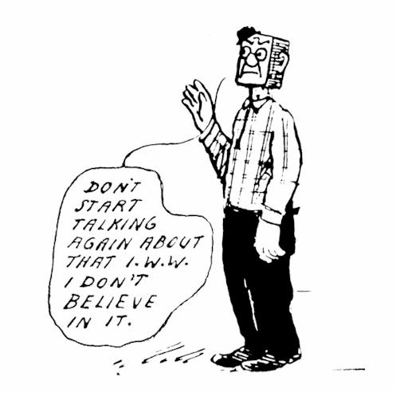

Submitted on Sun, 02/27/2011 - 1:28pm
The National Committee of Confederación Nacional de Trabajo CNT, Spain would like to take this opportunity to greet the American workers who have taken a stand against aggressions to their rights as laborers and especially to their right to organize. We believe the workers' struggle has to take place in their own midst, not dictated from above by their bosses, not from the upper hemispheres by their governmental “representatives” and not from their union “leaders”. As Madison is showing, the workers' can defend themselves just fine, all by themselves, are not lacking in solidarity and know how to react when attacked.
As anarchosyndicalists we believe in that the workers need to join and fight together, pick their own battles, decide how to fight those battles and, ultimately, control their own jobs and work-places. Our revolutionary aims – the overthrow of capitalism and its faithful servant the state and the establishment of anarchy – do not prevent us from standing with and behind any grass-roots workers' struggle, anywhere in the world as and when they arise and we would like to do so now, with the public servants of Wisconsin who have rightly rejected Governor Walker's poorly veiled assault on the rights they earned through more than a 100 years of battles in the streets and in the shops.
We hope that this battle succeeds in stopping the Governor's plans and that it rides the momentum to go one step further and ask for more, take more, take what is rightfully its own. To do that, you don't need leaders telling you what to do, not leaders in the big establishment unions, not leaders on the capitol. You just need each other, you need horizontal organization, mutual aid and self-management. The right to organize is the right to control over our own work and, fundamentally, the right to a free human society.
Buenventura Durruti said in 1936 that the workers weren't worried about “the ruins, because we're destined to inherit the earth and we carry a new world in our hearts...a world that is growing right now.”
All of our solidarity in your struggle to plant the seeds for that new world.
Submitted on Fri, 02/25/2011 - 7:10pm
By Arthur J Miller, IWW
I was watching the TV news about the protests in Madison last Saturday, they conveniently did not not mention there were far more pro-union protesters than they were anti-union protesters. I guess that fact was not news worthy to them. The news showed a short clip of Joe the scab plumper speaking and the damn fool said "We owe the unions nothing!" Looking at his bald head I had to think the man had more hair upon his head than he had brains.
First off Joe is not a real plumper, at best he is a plumber's helper. By union standards he did not go through a plumber's apprenticeship nor is he a licensed plumper, so he is not qualified to work as a plumber.
Yes, there are little plumping shops that under bid union shops and for less money you get less quality work. And even someone like Joe doing the work that he was never trained to do. I hope he is a better plumber than he is a politician.
Well Joe, the wannabe plumper, meet me, Arthur the pipefitter. I am rated by the union as a journeyman and I have over 30 years in the pipe trades. Yea, the media likes a fool like who they play up as a worker and kisses the bosses backside. But you sure the hell don't speak for me, a real pipe trades worker.
Submitted on Fri, 02/25/2011 - 4:24pm
BREAKING NEWS:
Police in Madison REFUSE Walker's command to remove demonstrators from the Capital. The Police have vowed to sleep at the Capital tonight! Gov. Walker has a history of using private security forces, specifically Wackenhut .
Submitted on Fri, 02/25/2011 - 3:12pm
Contact:
Madison IWW
608-313-4694
For Immediately Release:
The Working Class is the Colbert Nation. We are assembling in Madison, WI. Come and stand with us in our hour of need?
Solidarity; And that's the word!
Submitted on Tue, 02/22/2011 - 6:33pm
 Fellow Workers and Supporters:
Fellow Workers and Supporters:
The following motions were passed by the SCFL Monday February 21st:
Motion 1: “The SCFL endorses a statewide general strike, possibly for the day Walker signs his ”Budget Repair Bill,” and requests the Education Committee immediately begin educating affiliates and members on the organization and function of a general strike.”
Motion 2: “The SCFL goes on record as opposing all cuts contained in Walkers ”Budget Repair Bill,” including, but not limited to, curtailed bargaining rights and reduced wages, benefits, pensions, funding for public education and Medicare.”
Please pass supporting motions in your council and organize committees to begin educating affiliates and members on the organization and function of a general strike.
Links: